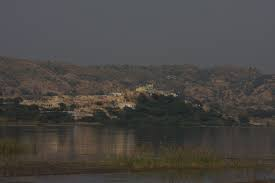

Rainwater harvesting brings hope to farmers in Pakistan’s Punjab
Farmers in Pakistan’s Punjab province are greening their lands and combating weather vagaries through rainwater harvesting using small dams
The big problems created by small dams in Potohar
In an area where only a small portion of rainwater can be used for agriculture – the rest of it flowing into streams and rivers – the dam was projected to store 1,733 acre feet of water, enough to provide one foot of water for more than five times a year to each of the 315 acres of land in three nearby villages.

The Salt Range and the Potohar Plateau
In an area where only a small portion of rainwater can be used for agriculture – the rest of it flowing into streams and rivers – the dam was projected to store 1,733 acre feet of water, enough to provide one foot of water for more than five times a year to each of the 315 acres of land in three nearby villages.